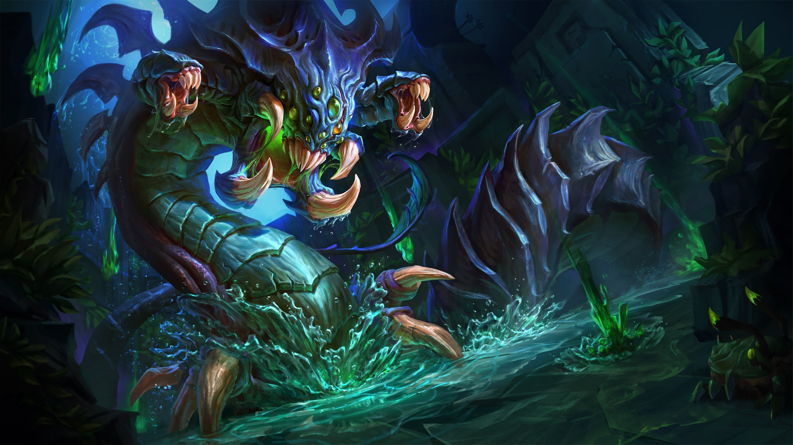

Project Overview
This project uses professional League of Legends esports data from Oracle's Elixir to study which roles most often produce the strongest player performance on winning teams.
Instead of defining a carry only by damage or gold, I use a role-adjusted impact score. This means each player is compared to other players in the same role, so supports, junglers, and damage roles can be evaluated more fairly.

Main Question
Among winning teams, which role is most likely to be labeled as the main impact player?
Why Role-Adjusted Impact?
A normal carry score based only on damage, kills, or gold would usually favor bot and mid laners. However, supports and junglers can also carry through assists, vision, map pressure, and low deaths.
To make the project more fair, each player is compared to other players in the same role.
Hypothesis Test
I tested whether all five roles are equally likely to be the main impact player. If the null hypothesis were true, each role would appear about 20% of the time.
I used Total Variation Distance (TVD) to compare the observed role distribution to the expected equal distribution.
Prediction Problem
I am building a binary classification model that predicts whether a player is the main impact player on their winning team.
- 1 = main impact player
- 0 = not main impact player
Observed Main Impact Role Distribution
After using the role-adjusted impact score, the distribution became much more balanced across roles.
Top
20.47%
Jungle
19.90%
Mid
21.41%
Bot
20.32%
Support
17.89%
Planned Models
My baseline model will use Logistic Regression with simple post-game features. For the final model, I plan to compare Logistic Regression, Random Forest, and Gradient Boosting.
Logistic Regression Random Forest Gradient Boosting GridSearchCV